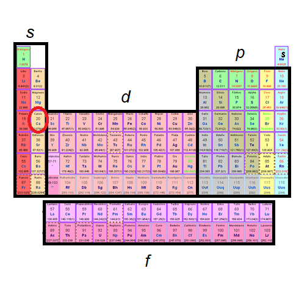
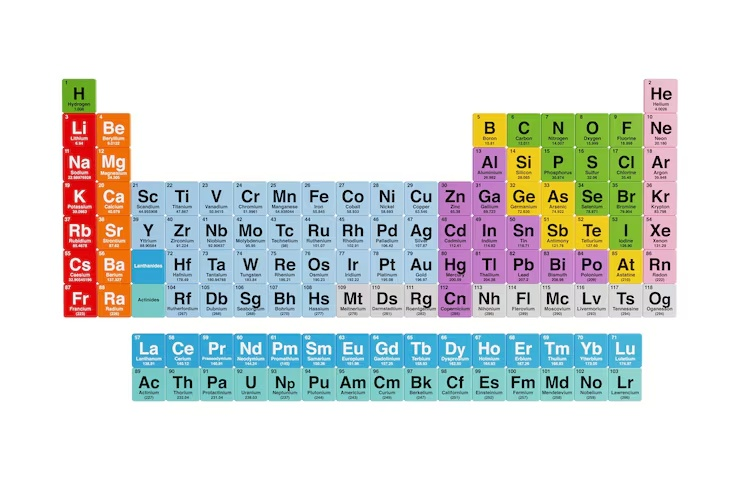
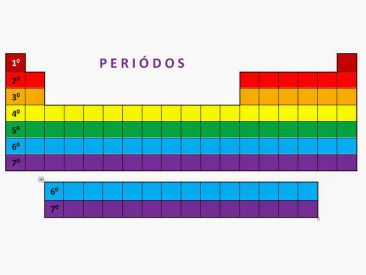

Los bloques son las cuatro regiones en las que se organiza la tabla periódica según el subnivel electrónico en el que se ubica el último electrón del átomo. El bloque s se encuentra a la izquierda, el p a la derecha, el d en el centro y el f en las dos filas separadas de la parte inferior. Esta división permite comprender mejor la configuración electrónica y algunas propiedades de los elementos

Los grupos son las 18 columnas verticales de la tabla periódica. Los elementos que pertenecen a un mismo grupo suelen tener propiedades químicas similares, ya que poseen una cantidad semejante de electrones en su capa más externa. Algunos grupos importantes son los metales alcalinos (grupo 1), los halógenos (grupo 17) y los gases nobles (grupo 18).

Los períodos son las 7 filas horizontales de la tabla periódica. Cada período representa un nivel principal de energía ocupado por los electrones de los átomos de sus elementos. Al avanzar de izquierda a derecha, el número atómico aumenta progresivamente, lo que significa que cada elemento tiene un protón más que el anterior.